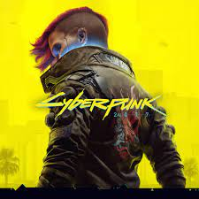
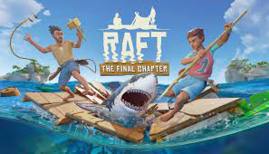
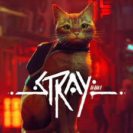

Топ найпопулярніших комп'ютерних ігор в Steam
Відеогра́ — це електронна гра, в ігровому процесі якої гравець використовує інтерфейс користувача, щоб отримати зворотну інформацію з відеопристрою. Електронні пристрої, які використовуються для того, щоб грати, називаються ігровими платформами. Наприклад, до таких платформ належать персональний комп'ютер та гральна консоль. Пристрій введення, який використовується для керування грою, називається ігровим контролером. Це може бути, наприклад, джойстик, клавіатура та мишка, геймпад або сенсорний екран. У 2011 році відеоігри були офіційно визнані видом мистецтва урядом США та Національним фондом мистецтв США. Однак, загальносвітове визнання їх мистецтвом лишається дискутовним питанням.
-
Cyberpunk 2077
Торік на цю нагороду, на думку користувачів Steam, заслуговувала гра Cyberpunk 2077 — пригодницький бойовик з відкритим світом від польської студії CD Projekt Red. Події Cyberpunk 2077 відбуваються у фантастичному мегаполісі Найт-Сіті, мешканці якого одержимі владою, гламуром і неконтрольованою модифікацією власних тіл.
-
Raft
У цій номінації гравці обирали гру, в яку набагато цікавіше грати з друзями, ніж наодинці. Переможцем стала Raft від невеликої шведської студії Redbeet Interactive. Це симулятор виживання у відкритому світі, де за сюжетом розтанула вся крига і катастрофічно піднявся рівень моря, затопивши майже весь суходіл. Гравцеві, що починає гру на невеликому плоту з мінімальною кількістю речей, доводиться покращувати свій плавзасіб, шукати острови, що колись були вершинами гір, задовольняти природні потреби (як-от голод і спрага) та досліджувати світ.
-
Marvel's Spider-Man: Miles Morales

Як не важко здогадатися з назви, у цій номінації за перемогу боролись ігри з найкращою та найцікавішою графікою. Перемогу здобула Marvel's Spider-Man: Miles Morales від американської студії Insomniac Games. Це пригодницький бойовик у всесвіті Ultimate Marvel, де роль Людини-павука взяв на себе Майлз Моралес, тоді як Пітер Паркер перебуває у відпустці. Гра дійсно має чудову графіку, круті спецефекти та кінематографічну картинку, як у фільмах про Людину-павука, тож вибір гравців цілком зрозумілий.
-
Stray
У цій номінації гравці обирали гру з найбільш креативним та оригінальним підходом. Переможцем очікувано стала Stray — гра від французької компанії BlueTwelve Studio, в якій розповідається про пригоди котика у місті, населеному роботами. Окрім оригінального сюжету гравці надихнулися і можливостями головного героя. Це не якісь суперздібності: як справжній чотирилапий він може робити різноманітну шкоду, тигидикати, нявкати і мурчати.
-
Elden Ring

Перші комп'ютерні ігри були доволі складними (взяти хоча б Doom), але поступово складність зменшувалася на противагу видовищності і ширшому охопленню аудиторії. Проте і зараз є доволі складні ігри, пройти які під силу далеко не кожному. Цього року найкращою серед таких ігор користувачі Steam визнали все той же Elden Ring (це єдина гра, яка отримала дві перемоги у різних номінаціях). Ця гра хоч і легша за Dark Souls, якою надихалася, проте для її проходження теж треба докласти зусиль, бо легкою прогулянкою тут і не пахне.
-
God of War

У цій номінації користувачі Steam обирали гру з найкарколомнішим та найнеймовірнішим сюжетом. Нею стала пригодницька гра God of War від американської Santa Monica Studio, у створенні якої брали участь українці. Ця гра вийшла ще 2018 року, проте була доступна лише на платформі PlayStation 4, а на ПК вийшла лише торік у січні. Сюжет дійсно дуже крутий, адже розповідає про боротьбу смертного героя зі скандинавськими богами та міфологічними чудовиськами, а різноманітні сюжетні повороти трапляються ледве не на кожному кроці.
-
LEGO Star Wars: The Skywalker Saga

На противагу «Грі, де ви пасете задніх» у цій номінації відзначили гру, яка дозволяє максимально розслабитися після напруженого дня. Користувачі Steam вирішили, що на перемогу тут заслуговує LEGO Star Wars: The Skywalker Saga — пригодницька гра за мотивами усіх дев'ятьох фільмів саги «Зоряні війни» від британської студії Traveller's Tales. Хоча у грі вистачає батальних сцен, двобоїв на світлових мечах, перестрілок та інших пригод, вона дійсно більше схожа на цікаву пригодницьку історію, ніж на випробування, від якого пітніє спина.
Більше ігор